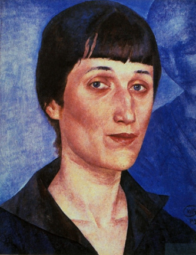

Page index / courses
1920-193
The New Economic Politics (NEP):
Click here for information on the NEP period.
Click here for information on the economic policy.
-Adolf Strakhov
Stalin vs. Trotsky:
Click here for information on the power struggle between Stalin and Trotsky
Lenin warns communist party about Stalin:
Click here for information on Lenin's Testament
Literature:
Anna Akhmatova

-Kuzma Petrov-Vidkin- Ann Akhmatova (1922)
New Year Ballad
The moon, weary in the pall of cloud, cast a murky glance at the hill. The table was laid for six, and only one place was empty, My husband, myself and my friends are seeing the new year in. Why are fingers covered as with blood? Why does the wine burn like poison? The host with full glace raised was impressive-immobile. 'I drink to the earth of our own forest glades, in which we all lie.' A friend looked at my face, suddenly remebered God knows what, and exlaimed: 'drink to her songs in which we all live!' But a third, not understanding, as he went out into the dark, answering my thoughts said: We ought to drink to him who is not with us yet.'-Anna Akhmatova 1923 (translated by Richard McKane)
Osip Emilevich Mandelstam:
Don't tell anybody, forget everything you saw- a bird, an old woman, a jail, anything... Or else , the minute you unlock your lips, when dawn comes you'll start to shake like a fine-firred pine tree. And you'll remember a wasp at a summer cottage, a children's pencil case, or forest blueberries you never picked.
-Osip Mandelstam (translated by Burton Raffel and All Bumgo)